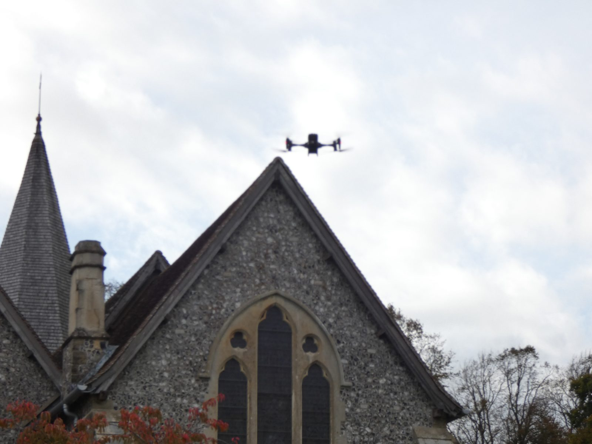

The service
Thermal coverage, tailored to the structure
Aerial Ecology provides specialist thermal imaging services for bat emergence and re-entry surveys, combining drone-mounted and ground-based thermal cameras with professional ecological expertise.
Our flexible approach allows survey coverage to be tailored to the structure, surrounding environment and survey objectives.
Integrated deployment
Aerial and ground-based thermal, working together
Each survey is designed around the building. We agree with you which areas need aerial coverage, which need ground-based cameras, and how many systems to run at once.
From the air
Drone-assisted bat surveys
Aerial thermal cameras provide alternative viewing perspectives and coverage of complex or inaccessible elevations: high roofs, chimneys, dormers and elevations hidden behind trees or other wings.
From the ground
Ground-based thermal bat surveys
Ground-based thermal cameras complement aerial observations and provide continuous coverage of selected areas.
At scale
Multiple systems, one survey
We can deploy multiple thermal imaging systems simultaneously, supporting coordinated surveys of larger or more complex structures.
Where it helps most
Complex structures and difficult viewpoints
Conventional survey methods remain right for many buildings. Thermal coverage adds most where visibility from standard surveyor positions is limited.


Evidence, not just footage
What you receive
Our service extends beyond collecting footage. We provide reviewable thermal recordings, supporting video evidence and ecological interpretation to help consultants identify emergence and re-entry activity, assess potential roost locations and prepare defensible survey reports.
- Reviewable thermal recordings from each camera position
- Supporting video evidence of emergence and re-entry activity
- Ecological interpretation to support your survey report
Thermal imaging supports surveyors, it doesn't replace them
Thermal cameras are a survey aid. Our surveys are designed and interpreted by experienced ecologists, alongside the survey effort and professional standards each project requires.
Survey season planning
Got a building that's hard to cover?
Tell us about the structure, the survey objectives and your dates, and we'll suggest a mix of aerial and ground-based thermal coverage.